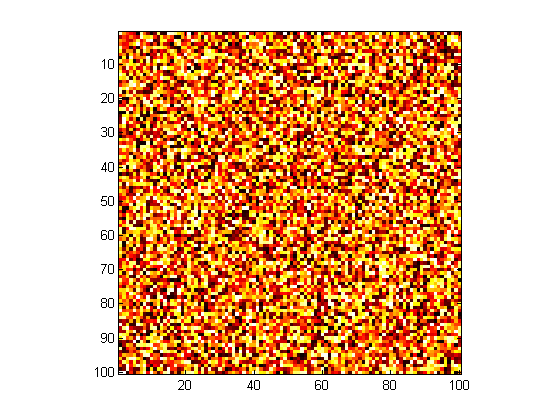
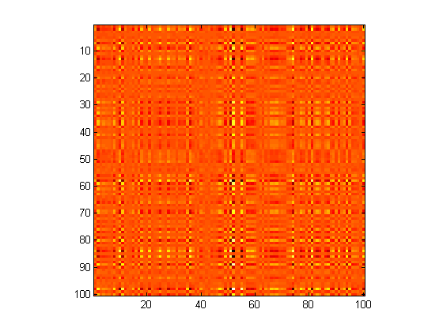
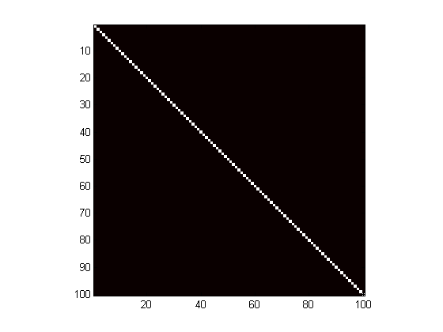

This demo shows how to visualize matrices as images and uses this to illustrate matrix inversion.
This is a graphic representation of a random matrix. The RAND command creates the matrix, and the IMAGESC command plots an image of the matrix, automatically scaling the color map appropriately.
n = 100;
a = rand(n);
imagesc(a);
colormap(hot);
axis square;
 This is a representation of the inverse of that matrix. While the numbers in the previous matrix were completely random, the elements in this matrix are anything BUT random. In fact, each element in this matrix ("b") depends on every one of the ten thousand elements in the previous matrix ("a").
b = inv(a);
imagesc(b);
axis square;
 But how do we know for sure if this is really the correct inverse for the original matrix? Multiply the two together and see if the result is correct, because just as 3*(1/3) = 1, so must a*inv(a) = I, the identity matrix. The identity matrix (almost always designated by I) is like an enormous number one. It is completely made up of zeros, except for ones running along the main diagonal.
This is the product of the matrix with its inverse: sure enough, it has the distinctive look of the identity matrix, with a band of ones streaming down the main diagonal, surrounded by a sea of zeros.
imagesc(a*b);
axis square;
